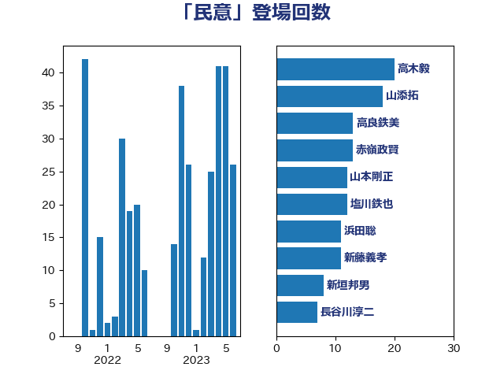

単語「民意」

| 高木毅 | 自由民主党 | 20 回 |
| 山添拓 | 日本共産党 | 18 回 |
| 高良鉄美 | 無所属 | 13 回 |
| 赤嶺政賢 | 日本共産党 | 13 回 |
| 山本剛正 | 日本維新の会 | 12 回 |
| 塩川鉄也 | 日本共産党 | 12 回 |
| 浜田聡 | NHK党 | 11 回 |
| 新藤義孝 | 自由民主党 | 11 回 |
| 新垣邦男 | 立憲民主党 | 8 回 |
| 長谷川淳二 | 自由民主党 | 7 回 |
| 徳永久志 | 無所属 | 7 回 |
| 大石あきこ | れいわ新選組 | 7 回 |
| 石橋通宏 | 立憲民主党 | 6 回 |
| 奥野総一郎 | 立憲民主党 | 6 回 |
| 階猛 | 立憲民主党 | 5 回 |
| 細田博之 | 自由民主党 | 5 回 |
| 有村治子 | 自由民主党 | 5 回 |
| 中西祐介 | 自由民主党 | 5 回 |
| 牧山ひろえ | 立憲民主党 | 4 回 |
| 柴山昌彦 | 自由民主党 | 4 回 |
| 山口俊一 | 自由民主党 | 4 回 |
| 寺田稔 | 自由民主党 | 4 回 |
| 西村智奈美 | 立憲民主党 | 3 回 |
| 浜地雅一 | 公明党 | 3 回 |
| 櫻井周 | 立憲民主党 | 3 回 |
| 杉本和巳 | 日本維新の会 | 3 回 |
| 岸田文雄 | 自由民主党 | 3 回 |
| 岩谷良平 | 日本維新の会 | 3 回 |
| 小林一大 | 自由民主党 | 3 回 |
| 宮本徹 | 日本共産党 | 3 回 |
| 佐々木さやか | 公明党 | 3 回 |
| 青柳仁士 | 日本維新の会 | 2 回 |
| 西田実仁 | 公明党 | 2 回 |
| 舩後靖彦 | れいわ新選組 | 2 回 |
| 臼井正一 | 自由民主党 | 2 回 |
| 田村貴昭 | 日本共産党 | 2 回 |
| 玉木雄一郎 | 国民民主党 | 2 回 |
| 牧野たかお | 自由民主党 | 2 回 |
| 熊谷裕人 | 立憲民主党 | 2 回 |
| 浅田均 | 日本維新の会 | 2 回 |
| 水岡俊一 | 立憲民主党 | 2 回 |
| 横山信一 | 公明党 | 2 回 |
| 志位和夫 | 日本共産党 | 2 回 |
| 小野泰輔 | 日本維新の会 | 2 回 |
| 小池晃 | 日本共産党 | 2 回 |
| 吉田宣弘 | 公明党 | 2 回 |
| 北側一雄 | 公明党 | 2 回 |
| 伊藤渉 | 公明党 | 2 回 |
| 伊藤孝江 | 公明党 | 2 回 |
| 仁比聡平 | 日本共産党 | 2 回 |
| 井上哲士 | 日本共産党 | 2 回 |
| 三木圭恵 | 日本維新の会 | 2 回 |
| 齊藤健一郎 | 無所属 | 1 回 |
| 高木真理 | 立憲民主党 | 1 回 |
| 音喜多駿 | 日本維新の会 | 1 回 |
| 阿部司 | 日本維新の会 | 1 回 |
| 金子恭之 | 自由民主党 | 1 回 |
| 野田聖子 | 自由民主党 | 1 回 |
| 足立康史 | 日本維新の会 | 1 回 |
| 赤池誠章 | 自由民主党 | 1 回 |
| 谷合正明 | 公明党 | 1 回 |
| 緑川貴士 | 立憲民主党 | 1 回 |
| 細野豪志 | 自由民主党 | 1 回 |
| 笠井亮 | 日本共産党 | 1 回 |
| 福田昭夫 | 立憲民主党 | 1 回 |
| 福山哲郎 | 立憲民主党 | 1 回 |
| 石川大我 | 立憲民主党 | 1 回 |
| 矢倉克夫 | 公明党 | 1 回 |
| 片山さつき | 自由民主党 | 1 回 |
| 泉健太 | 立憲民主党 | 1 回 |
| 河野太郎 | 自由民主党 | 1 回 |
| 沢田良 | 日本維新の会 | 1 回 |
| 柚木道義 | 立憲民主党 | 1 回 |
| 枝野幸男 | 立憲民主党 | 1 回 |
| 松下新平 | 自由民主党 | 1 回 |
| 山田勝彦 | 立憲民主党 | 1 回 |
| 山本順三 | 自由民主党 | 1 回 |
| 山岸一生 | 立憲民主党 | 1 回 |
| 山口那津男 | 公明党 | 1 回 |
| 小渕優子 | 自由民主党 | 1 回 |
| 小川淳也 | 立憲民主党 | 1 回 |
| 小倉將信 | 自由民主党 | 1 回 |
| 安江伸夫 | 公明党 | 1 回 |
| 大島九州男 | れいわ新選組 | 1 回 |
| 吉良よし子 | 日本共産党 | 1 回 |
| 吉田はるみ | 立憲民主党 | 1 回 |
| 務台俊介 | 自由民主党 | 1 回 |
| 中野洋昌 | 公明党 | 1 回 |
| 中谷一馬 | 立憲民主党 | 1 回 |
| 中川正春 | 立憲民主党 | 1 回 |